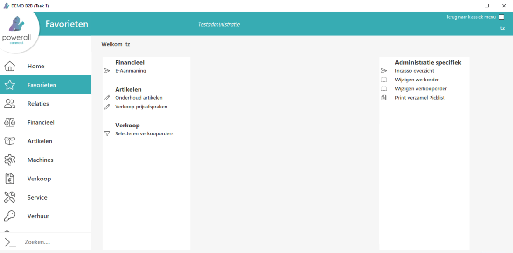
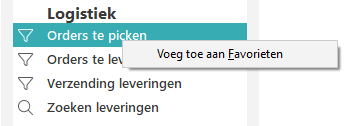
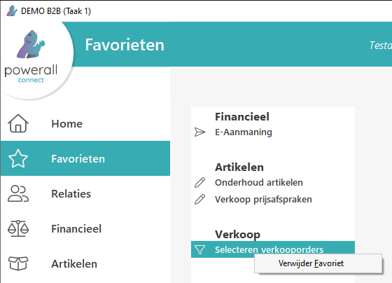

Favorieten is een eigen gebruikersmenu. Hier staan de meest gebruikte programma's.
Links verschijnen de favorieten.

NB Rechts verschijnen de administratie specifieke programma's.
Een gebruiker kan zelf een favoriet toevoegen.
Als er een favoriet toegevoegd is, verschijnt standaard dit menu.
Als er nog geen favoriet toegevoegd is, verschijnt éénmalig het informatie scherm Favorieten. Druk op Begrepen.
Tip: Om direct naar de favorieten te gaan, gebruik CTRL+ F.
Elke gebruiker heeft zijn eigen favorieten. Als er ingelogd wordt onder een andere gebruiker kan het voorkomen dat er nog geen favorieten zijn (toegevoegd).
Om een optie toe te voegen, doorloopt u de volgende stappen:
Klik met rechtermuis knop op het betreffend programma.
Kies Voeg toe aan Favorieten.

Het programma is toegevoegd.
Om een optie te verwijderen, doorloopt u de volgende stappen:
Klik met de rechtermuis knop op het betreffend programma.
Kies Verwijder Favoriet.

Het programma is verwijderd.
Gerelateerde onderwerpen
Copyright ©